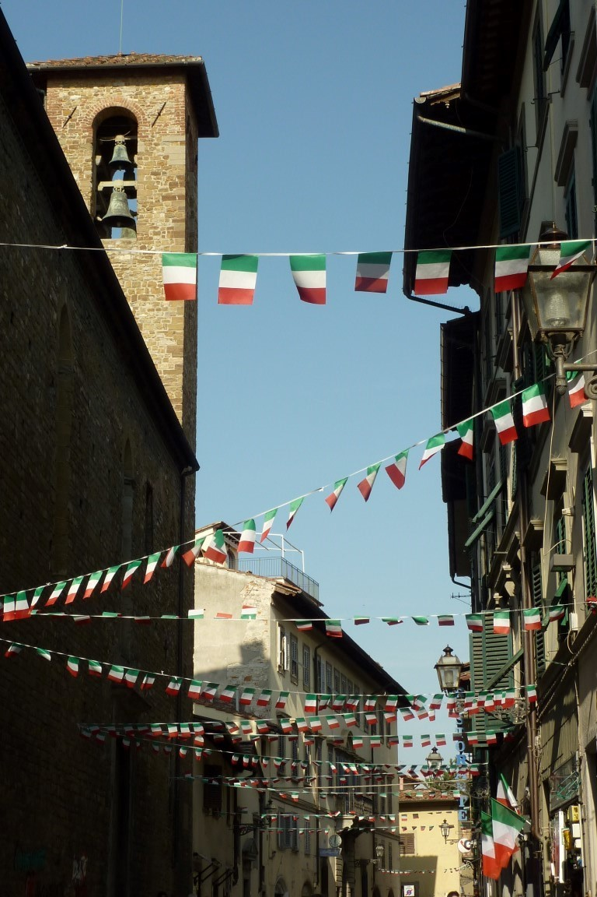
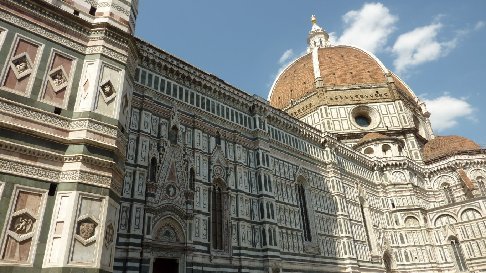
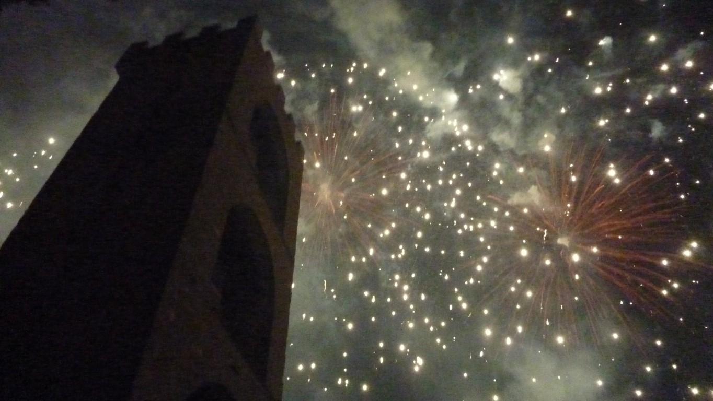
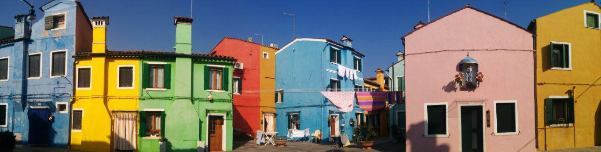
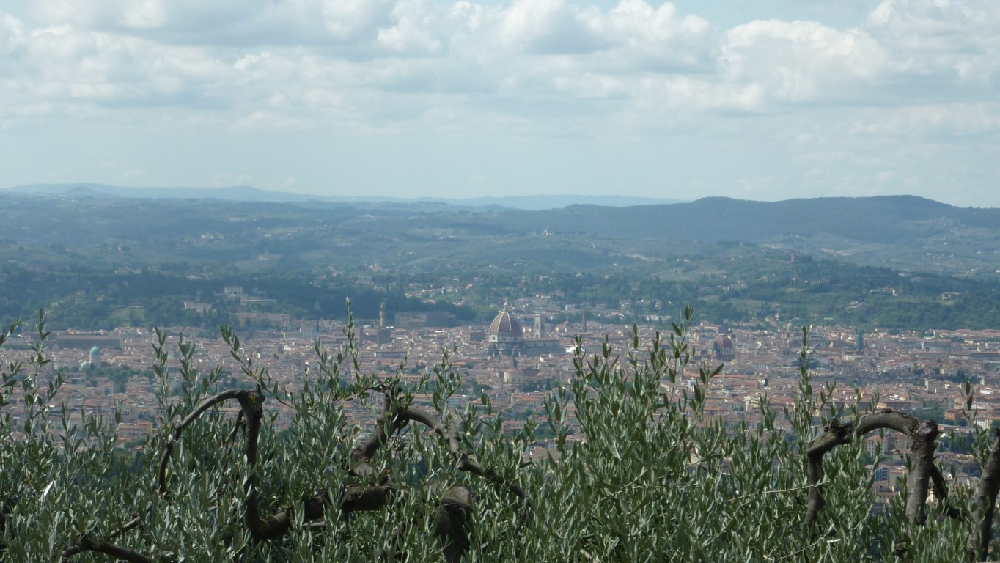
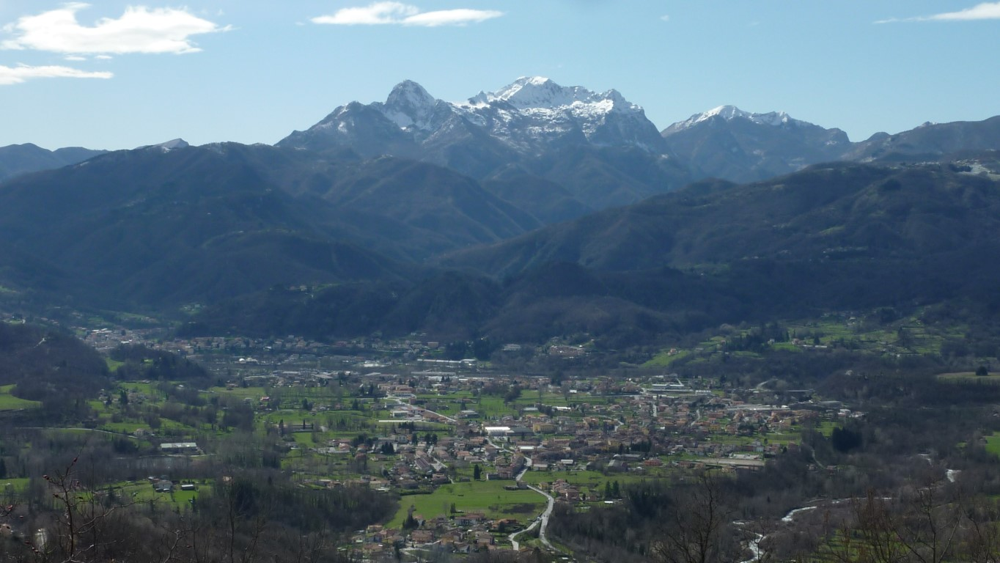
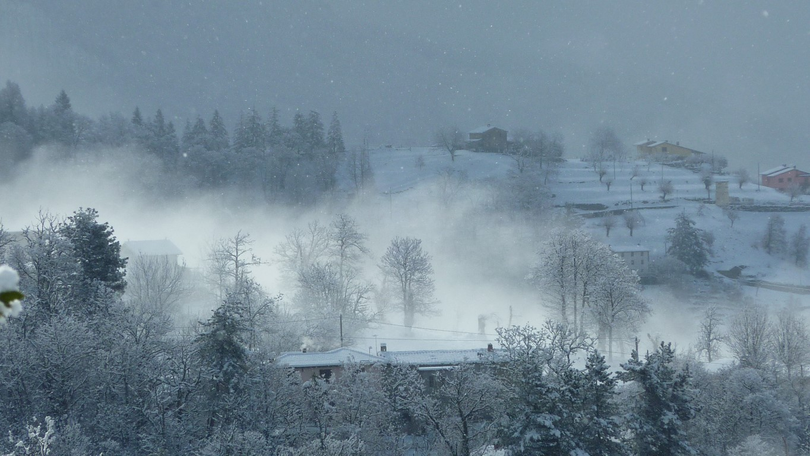
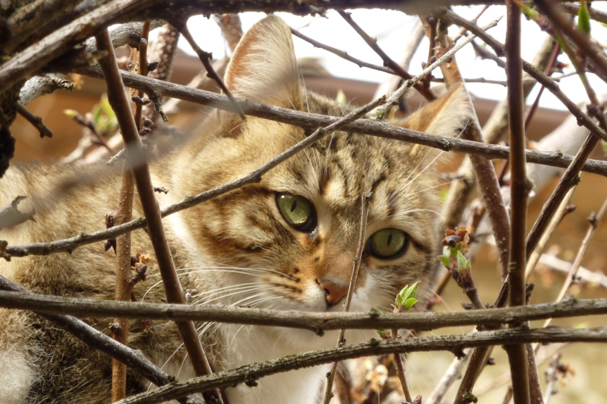
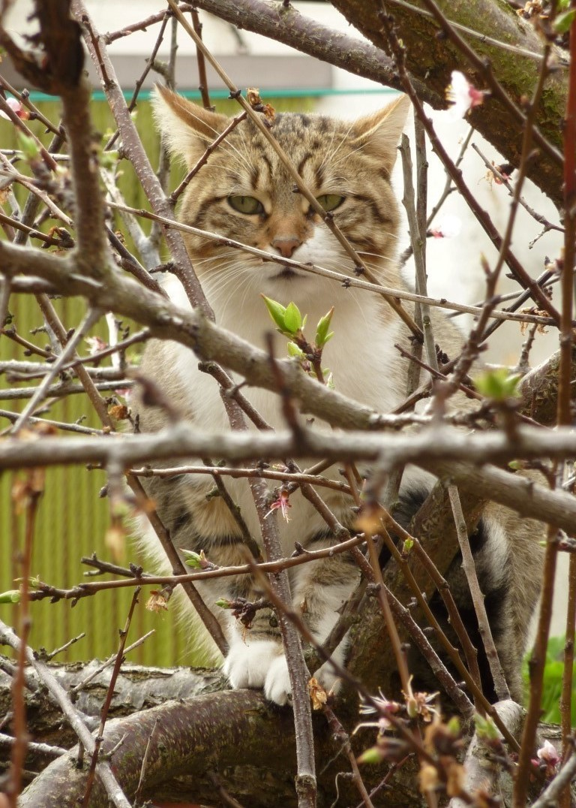

Pear and pecorino pasta was the first meal I ate when I arrived in Florence, and it instantly became my favourite meal.
Florence
The infamous Duomo. This was my workplace view for 4 months.
Fireworks on June 25th
Burano, one of the islands of Venice. Burano and Murano islands were, for me, a thousands times better than Venice proper.
View of Florence from Fiesole. A lovely retreat from the city crowds. This was a trip I took with my mum when she came to visit me.
My first Workaway host, in Prunecchio
Workaway host in Prunecchio. Snow in mid March!
Just a cat in a tree...The small Tuscan villages are full of interesting details.
Not amused at all